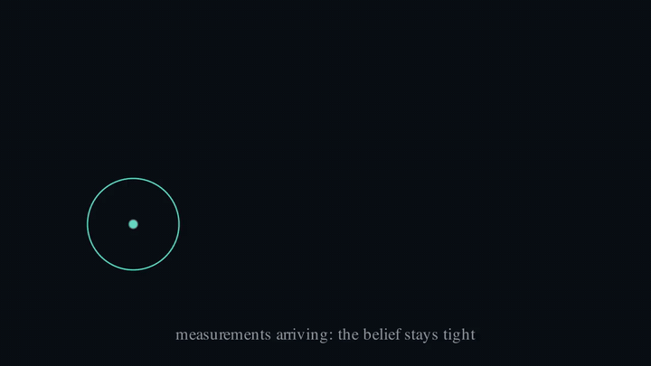

What is this?
A Kalman filter is an algorithm that combines a predictive model ("things keep moving the way they were") with noisy measurements ("the sensor says it is roughly here") to produce the statistically best estimate of something you cannot observe directly. Published by Rudolf Kálmán in 1960, it navigated Apollo to the Moon and still runs inside every drone, rocket, GPS receiver, and robot vacuum. This page is a live one, tracking a ball: the whole implementation is 50 lines of vanilla JavaScript, and the demo exists to let you feel what those lines do.
The filter never knows where the ball is. It maintains a belief: a best guess plus an honest account of its own uncertainty, updated sixty times a second. The argument this demo makes is the point of the whole series: an agent should act on that belief, not on the raw, lying observations.
What is a Kalman filter, in two moves
Predict. Each frame, push the belief through simple physics: position moves by velocity, and the uncertainty grows a little, because no model of the world is perfect.
Update. When a measurement arrives, blend it with the prediction. The blend weight is the Kalman gain, and it is nothing but a trust ratio between two uncertainties:
K = σ²_prediction / (σ²_prediction + σ²_sensor) new belief = prediction + K · (measurement − prediction)
A sharp sensor drives K toward 1: believe the dots. A noisy sensor drives K toward 0: trust the physics. The two sliders above set exactly those two uncertainties, which is why they are the whole control panel. Everything the filter does is a precision-weighted argument between them:
When the ball enters the occlusion strip, measurements stop and only predict runs. The ellipse balloons because the filter is honest about what it no longer knows, and the first measurement on the far side snaps it tight again:

Why it matters
Notice what the filter actually stores: not a position but a compact internal state, advanced by a model, corrected by evidence, decoded to pixels only for display. That loop is the skeleton of every learned world model in modern robotics and physical-world AI, and the Kalman filter is its closed-form ancestor. Its one hard limit is that a single-peaked belief cannot represent a fork like "the ball went left or right of the pillar", and that limit is where the rest of this series picks up.
The full derivation, from one idea to the five equations, is in the README.